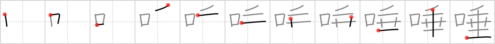

唾
← →
saliva

Reading:
On-Yomi: ダ、タ — Kun-Yomi: つば、つばき
Heisig story:
Mouth . . . droop.
Koohii stories:
1) [astridtops] 14-10-2006(113): When some people are sleeping, their mouths droop open, and saliva drips out.
2) [faneca] 20-7-2012(6): Easy to remember if you have read the manga -or watched the anime- 謎の彼女 X「なぞのかのじょX」("Mysterious Girlfriend X"): a boy who falls in love with a classmate when he sees her dripping drool during a nap (BTW astridtops' story fits in perfectly). Note: The boy's name, 椿「つばき」 camellia (#1569 椿), is a wordplay: it's one of the ways you can pronounce this kanji ( 唾き ).
3) [synewave] 15-5-2007(4): Droopy the dog with saliva drooling from his mouth.
4) [sulris] 18-4-2011(3): When you mouth is drooping saliva drools out.
5) [koohiikun] 21-6-2010(3): Obviously, the mouth is where saliva droops out.